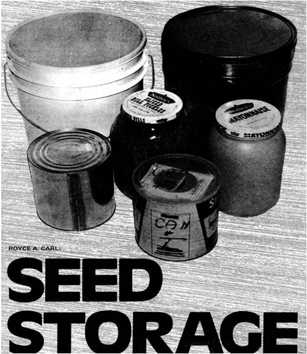
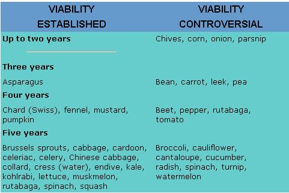
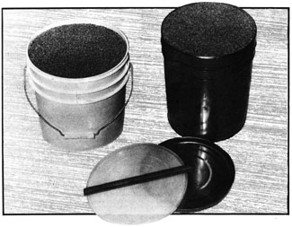
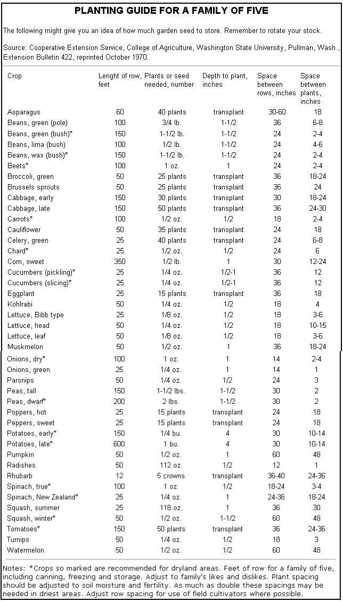

In MOTHER NO. 30 I discussed the collection and storage of a longterm emergency food supply. Such a basic reserve, however, might not be enough. If you have to fall back on tucked-away provisions, you'll need to supplement your meals with as much fresh produce as possible . . . and, ideally, you should be able to grow your entire future diet if necessary. Those are two good reasons why a cache of survival supplies should contain vegetable and grain seeds, stored and rotated for maximum viability. (Be sure to include varieties of plants which are high in vegetable protein: beans, soybeans, peas, sunflowers, etc.)
Note that this article covers storage only, not the growing and collection of garden seeds. This, however, is a skill you should certainly learn. Some of the sources listed in the bibliography contain information on the subject, and your local library can supply any additional material you need.
Even under ideal circumstances, seeds will not live indefinitely in storage. Forget those stories you've probably heard about viable specimens two or three thousand years old being found in Egyptian tombs. Plant physiologists now discount all such claims, since every authentic ancient sample has turned out to be dead when tested (and has promptly disintegrated).
Nevertheless, seeds that are free of insects and harvested dry (or dried soon after gathering) will remain sound and will sprout for long periods. Many samples of wheat and corn-stored with a moisture content of 10 to 12 percent-have had a better than 90 percent germination rate and have otherwise proven quite healthy when tested four to six years later.
The trouble is that, when you purchase seeds to put by, you have no way of knowing their condition. You can only assume that they've been cared for correctly up to that point Therefore, the periods of viability listed in the following table must be considered as only approximate.
The above estimates hold good, of course, only if the seed is correctly treated in storage. The following are some of the factors that determine whether your potential garden will retain its viability on the shelf.
The seeds of most crops will keep for a year or more if stored in a dry place, but will soon be killed by repeated wetting or submersion. The exceptions to this rule are found among aquatic plants. For example, wild rice (Zizania aquatica) must actually be stored in water at 32° F for maximum germination, and will lose its ability to sprout if exposed to air for a few days.
For most garden varieties, though, dampness is a deadly enemy . . . especially if coupled with high temperatures. Onion seeds will lose their viability in a few months in a warm, humid place, but can be kept more than a dozen years if well dried and sealed in glass. According to James F. Harrington of the University of California, all seeds in a sample may be dead after a couple of weeks on the shelf in a hot, humid New Orleans summer . . . while in Sacramento (hot and dry in summer, cold in winter) the same batch of seeds may last two or three years without serious germination loss.
Remember that moisture is found inside a seed as well as outside, and too high a percentage of internal water can be as damaging as excessive external dampness. If you put your future vegetables by while their water content is high, internally produced heat may build upin the storage container and shorten the life of the contents. The damage-like that from externally applied heat-results from changes in cell metabolism: the breakdown and conversion of chemical components and protein by enzymes. The same factors are present in dry seed, but are activated by water and work faster at higher temperatures.
Dry seeds also suffer less from cold. Most, in fact, can tolerate for years extremely low temperatures that would soon kill the parent plants. They can be stored in surroundings below 32° F if their water content is small enough. Cold as severe as-320° F-the temperature of liquid nitrogen-does not injure wheat embryos that contain less than 10 percent water, but quickly kills those with a moisture content of 50 percent.
Removal of too much water from seeds, however, also causes death. Maximum viability results from storage at a controlled temperature (usually between 32° and 41° F, a range in which internal moisture does not freeze but enzyme activities are retarded) and at a fixed moisture content
The upper limit for moisture within a seed varies with the kind of plant, the surrounding temperature and the duration of storage. The maximum level s generally considered safe for the long term under average conditions are 13 percent for beans, peas and cereal grains (including corn), 12.5 percent for soybeans, 10.5 percent for flaxseed and somewhat lower figures for peanuts and most vegetable seeds. Actually, seed stocks for many of these crops are customarily stored at lower moisture levels than those indicated.
Temperature and moisture, of course, are only two of the factors that affect the storage life of seeds. Gases, fungi, insects, bacteria, chemicals and light can also diminish or destroy their power to germinate . . . and some of these hazards are discussed briefly in the following sections.
Gases-particularly carbon dioxide and oxygen-can have a marked effect on the enzymes and chemical components of a living seed. If carbon dioxide (the end product of respiration) accumulates inside the kernel or in the surrounding earth, injury may result. When seeds are stored for a long time, factors that stimulate their metabolism and promote the formation of this gas must be controlled to insure maximum viability.
A high rate of gas exchange-the giving off of carbon dioxide and taking up of oxygen-indicates that a seed is no longer quiescent but has speeded up its life processes. If the energy made available by respiration is not used in growth, it will be liberated as heat . . . and the temperature in the storage container will rise to a harmful level. This is one more reason why your stock should be kept dormant.
Fungi and bacteria-which commonly occur on and in seeds-can seriously affect their viability in several different ways. Their respiration, for instance, produces energy which may raise the seeds' temperature and cause their death. Grains of stored wheat often appear to be respiring at an unusually high rate, when actually most of the carbon dioxide and heat is produced by micro-organisms growing inside the kernels and not by the wheat embryos.
In addition, some micro-organisms may exhaust the seed's stored compounds while carrying on their life processes. Others produce chemicals that harm the embryo, or secrete enzymes or other compounds that soften the seedcoat so that air and water diffuse into the interior and hasten metabolism and loss of viability.
Micro-organisms themselves require water to grow, and thorough drying of a seed inhibits their activity. Old seeds, and those that are stored under unsuitable conditions of humidity and temperature, are particularly susceptible to attack.
Most fungi that develop in storage thrive at temperatures between 85° and 95° F. Their development is retarded below 70°, and most of them grow very slowly, if at all, below 50°. A few species, however, will continue to develop at a low rate even at that temperature, and may gradually invade seeds during the winter. Then, in the warmer weather of spring, they will grow rapidly and cause extensive spoilage.
Insect infestation can take place in many different ways. One of the primary methods is for the adult pest to lay its eggs in the blossom of the plant. Thus the seed forms around the egg, which remains dormant until the right conditions of warmth and dampness occur and allow it to develop.
In fact, temperature and moisture are important in the control of any insect problem: As the levels of these two factors are lowered, the rate of the intruders' activity, feeding, development and reproduction is reduced.
Rice and granary weevils, for instance, do not develop in seeds that contain less than 8 percent moisture, and do not grow well when the water content is less than 11 percent (except at a temperature of 85° to 90° F). Flour beetles, and bran beetles such as the sawtoothed grain beetle, can live on almost completely dry food if the temperature is favorable. They do, however, grow and reproduce more rapidly as the moisture content rises.
The optimum temperature for most seed-infesting insects is 80° to 85° F. Heat above 950 is not favorable, and below 700 development is retarded. Flour beetles do not reproduce below 65°, and granary and rice weevils cease to breed below about 60°. Most insects that infest stored products stop feeding and become inactive between 40° and 50°. Some species of mites will reproduce at 40° or even lower, but only if the moisture content of the seed is above 12 percent.
Many other dangers can affect stored seed, including a broad spectrum of disease. Infection can strike from outside or through the roots, while the parent plant is growing. The disorder invades the host's vascular system and is spread to all parts . . . even to the seeds, where it remains dormant until activated by just the right amount of warmth and moisture.
The fact is that a plant can be attacked-at any stage in its growth, and in many different ways-by hundreds of insects, viruses, smuts, fungi, blights, scabs and so forth. No one method of treatment can or will protect seeds from all possible dangers.
Low moisture and temperature, however, will retard or stopthe growth of most of a cached seed's enemies . . . and proper storage containers are also essential. Metal cans, correctly sealed, provide an absolute barrier to moisture, gas and light They guard their contents against floods, rodents, insects and harmful fumes, and maintain the product's physical quality (including its water content).
The storage of seeds-which are, after all, living organisms-does present some complex problems. If you care for your supply properly, though, you'll have the assurance of knowing that a self-perpetuating food supply is tucked away on your shelves . . . ready to go into action in some future growing season.
James F. Harrington, Ph.D., University of California, Davis, Calif. 95616 (Personal correspondence).
Seed and Pollen Storage for Conservation of Plant Gene Resources by James F. Harrington. Reprinted from Genetic Resources in Plants-Their Exploration and Conservation, edited by O. H. Frankel and E. Bennett, Blackwell Scientific Publications, Oxford and Edinburgh, 1970. Possibly available from Interna. tional Biological Programme, 7 Marylebone Road, London NW1, England. Price unknown.
The Value of Moisture-Resistant Container In Vegetable Seed Packaging by James F. Harrington, California Agriculture Experiment Station Bulletin 792, Division of Agriculture Sciences, University of California, Davis, California 95616. Availability and price unknown.
Seeds (Yearbook of Agriculture, 1961), U.S. Department of Agriculture. Available for $7.10 from Superintendent of Documents, Government Printing Office, Washington, D.C. 20402. Senators and congressmen-are often able to supply current yearbooks without charge, but the government has just changed its policy on pricing and free materials and I doubt that this back issue could be obtained by that method.
Handbook for Vegetable Growers by J.E. Knott, John Wiley & Sons, Inc., Now York, N.Y., 1962, $6.95.
Seed World, 434 S. Wabash Ave., Chicago, III. 60605. Subscription $4.00 per year.
"Drying, Storage and Packaging of Seed". Seed World 108 (10), May 28, 1971, pp. 2-5.
Seedsmen's Digest, 1910 W. Olmos Dr., San Antonio, Tex. 78201. Subscription $4.00 per year.
Seed Trade News, Dean Enterprises, Inc., 5100 Edina Industrial Blvd., Edina, Minn. 55435. Subscription $6.00 per year.
|
 |
 |
 |
|
 |
|
|